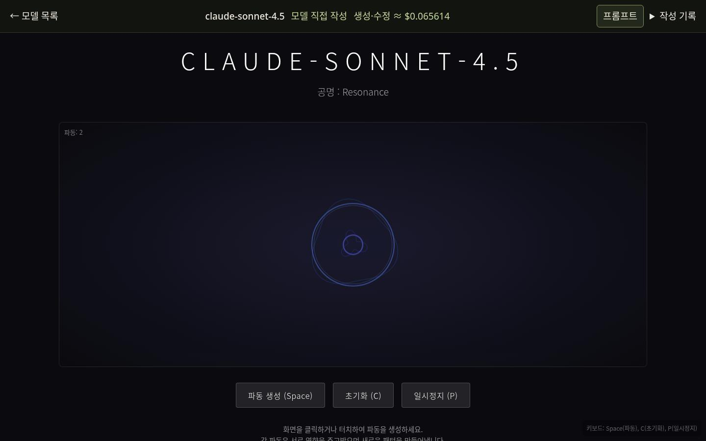
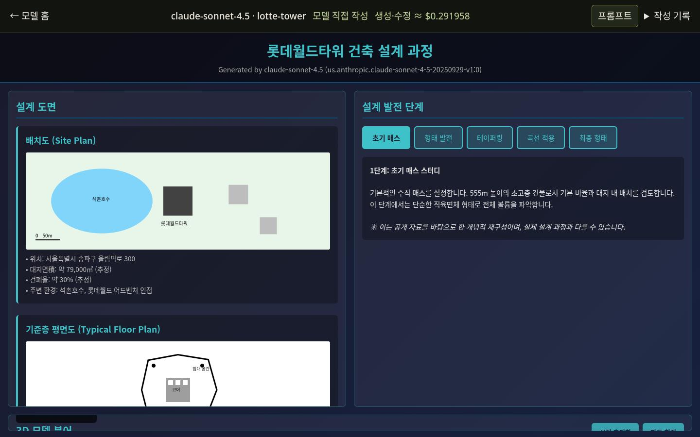

ONE MODEL · TWO EXPERIENCES
claude-sonnet-4.5
us.anthropic.claude-sonnet-4-5-20250929-v1:0
이 모델의 두 가지 항목과 작성 상태를 확인하세요. 실제 결과가 있는 항목에서 원본·프롬프트·비용을 볼 수 있습니다.
이 모델의 두 가지 항목과 작성 상태를 확인하세요. 실제 결과가 있는 항목에서 원본·프롬프트·비용을 볼 수 있습니다.

WHOAMI
나는, 이런 모델입니다.
각 모델이 직접 표현한 미디어아트 자기소개
모델 직접 작성 ↗생성·수정 ≈ $0.065614

LOTTE-TOWER
롯데월드타워를 모델링하다.
각 모델이 직접 작성한 도면·설계 과정·완성 3D
모델 직접 작성 ↗생성·수정 ≈ $0.291958